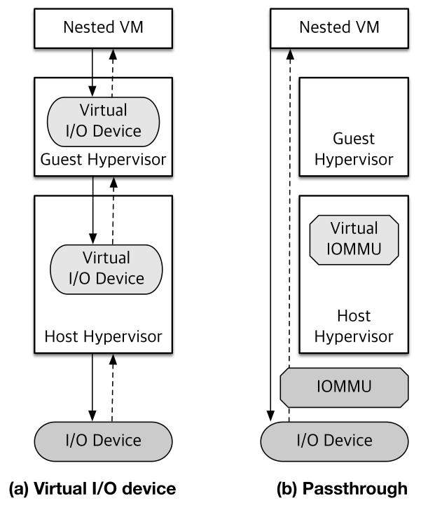
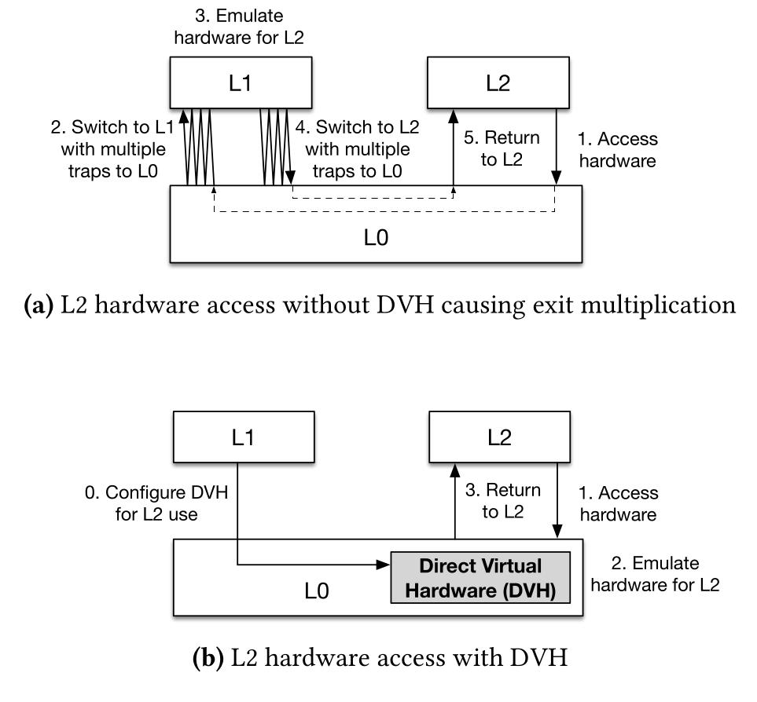
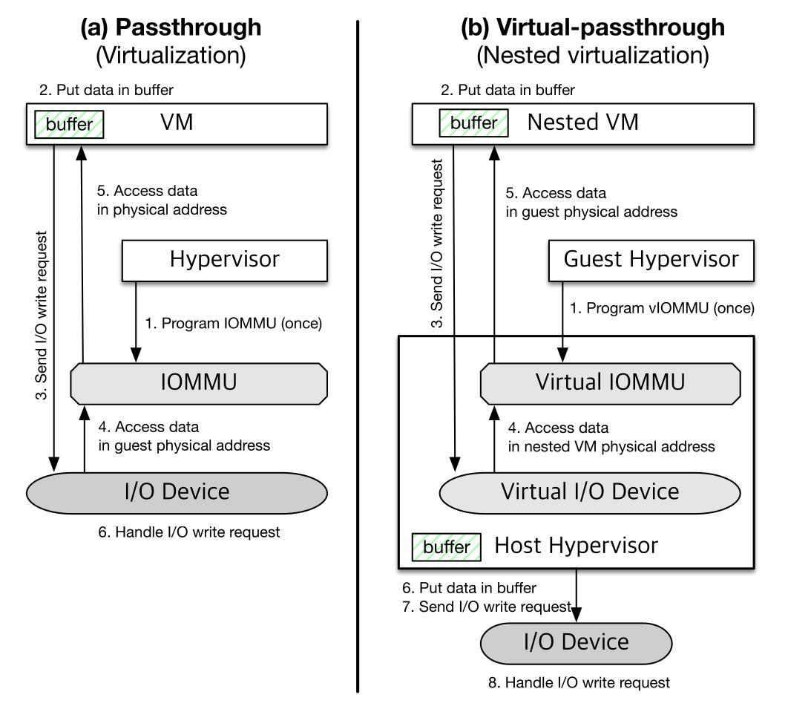
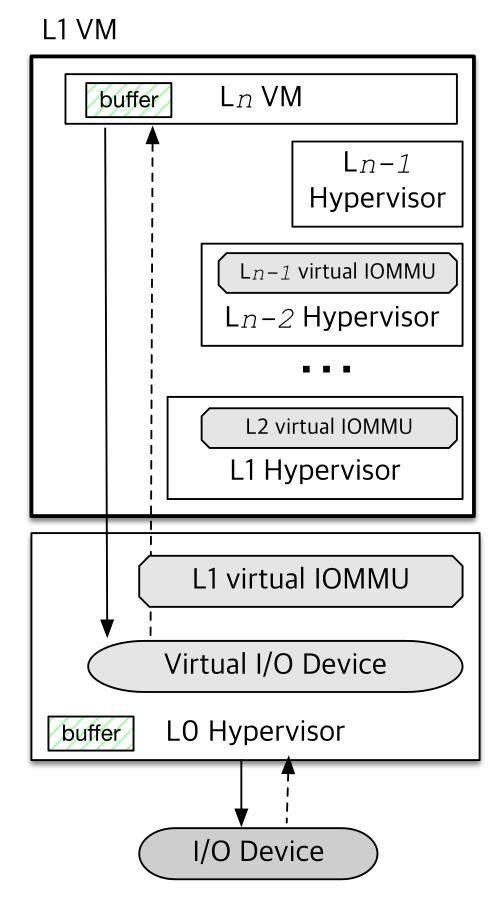
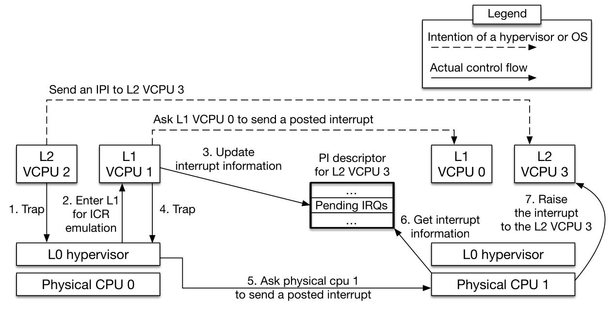
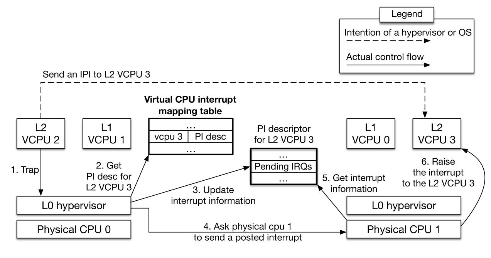
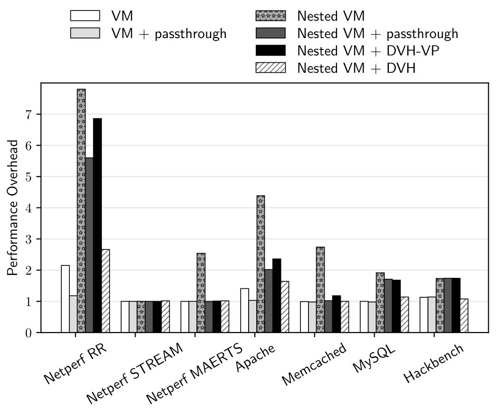
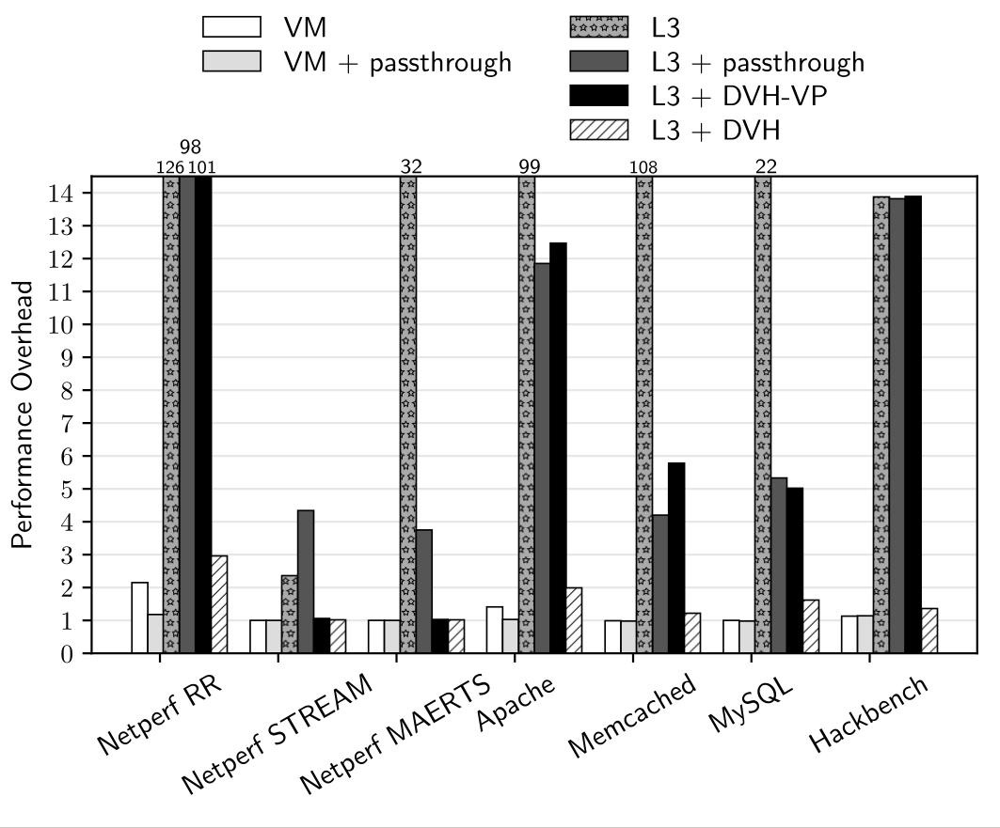

Optimizing Nested Virtualization Performance Using Direct Virtual Hardware
Jin Tack Lim¹ Jason Nieh¹
¹Columbia University
ASPLOS 2020
Nested virtualization
VMs on top of IaaS cloud providers
Support for legacy applications and security
Performance overheads are high
I/O Virtualization models
Device Passthrough
Directly assign Physical devices to VM
Gives better performance
Disallows migration of VM
Needs additional Hardware support
Virtual I/O
Hypervisor assigns a virtual device to VM
Needs hypervisor intervention
Exit multiplication problem in Nested virtualization
Nested I/O virtualization

Hardware support for Virtualization
x86 and ARM provide architectural support
Supports only single level virtualization
Only host hypervisor can use them
All privileged instruction fault to the host hypervisor
Causes Exit multiplication problem
Direct Virtual Hardware

Techniques proposed
Virtual Passthrough
Virtual Timers
Virtual IPI
Virtual idle
Virtual Passthrough
Host hypervisor assigns virtual devices
Performance similar to device passthrough
Guest Hypervisor with passthrought support
Allows VM migration
Virtual Passthrough

Recursive Virtual Passthrough

Timers
OSes need Timers
Two ways to provide timers to VMs
Software emulation (Linux hrtimers)
Architectural support for timers (VMX-preemption timers (VT-x))
Virtual Timers
Reduces overheads when OS tries to set timers
Host hypervisor handles timers instead of forwarding to guest hypervisor
Exposes additional virtual timers
Guest hypervisor is only responsible to save and restore timer data
Timer interrupts can be optimized with Posted interrupts
Posted Interrupts: Allows VM to recieve interrupts without exiting to hypervisor
Virtual IPI
Inter Processor Interrupts between logical cores
Involves writing to ICR Interrupt Command Register
Posted Interrupts reduces overheads only on receiver side
Guest hypervisor needs to expose CPU mappings to Host hypervisor
Uses a mechanism similar to page table
Host intervention required only on sender side
Nested VM IPI

Virtual IPI

Virtual idle
Reduces overheads when entering low power state
L1 enables only if it has only one L2 VM
On a trap, L0 switches to other L1 hypervisor or enters low power state
Evaulations
Implemented 4 techniques in KVM
Use KVM and Qemu as the Host and guest hypervisors
Use microbenchmarks, Apache, MySQL, memcached, netperf and hackbench
Also perform experiments testing L3 VM
Micro Benchmark Results
Virtual passthrough performs 3 times better
Virtual timer performs 13 times better
Virtual IPI and Virtual idle performs 8 times better
Performance on L2 VM

Performance on L3 VM

Overall
DVH performs close to Direct passthrough while allowing migration